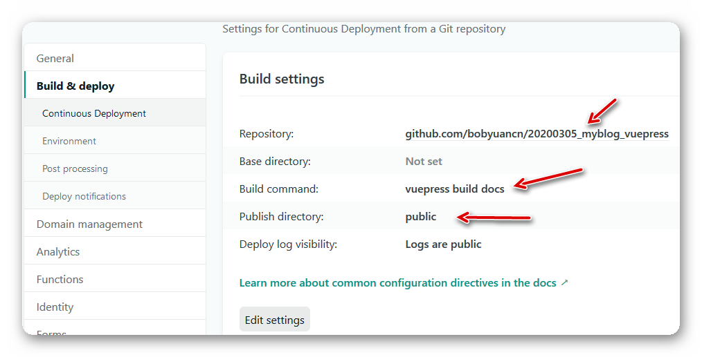

利用 VuePress 搭建博客网站
# 搭建博客网站
# 1. 安装 VuePress
我的主力电脑安装的是 Windows 10 专业版64位操作系统，Git 的环境略过，仅就安装 VuePress 的环境做一简要叙述。
下载安装 Node.js 和 Yarn。例如，在本文写作的时候，下载安装的是
node-v12.16.2-x64.msi和yarn-1.22.4.msi。注意： yarn 的二进制可执行程序，位于
%LOCALAPPDATA%\Yarn\bin，应当被添加到 当前用户 的 PATH 环境变量中。参照 VuePress 的官方文档，安装 VuePress ：
# Install vuepress. yarn global add vuepress # Upgrade. #yarn global upgrade vuepress新打开一个命令行窗口，检查一下版本：
vuepress --version【可选】按照 VuePress 的文档说明，试试建立一个网站，体验一下效果。
# 新建一个 markdown 文件 echo # Welcome VuePress!MR.lan > README.md # 开始写作，用浏览器打开看效果 vuepress dev # 构建生成静态文件（输出到 .vuepress\dist 文件夹中） vuepress build
# 2. 搭建 Blog 平台
我选择了vuepress-theme-reco主题，下面是搭建步骤。
按官方文档的说明，使用 yarn 来安装：
# Install the theme.
yarn global add @vuepress-reco/theme-cli
# Upgrade.
#yarn global upgrade @vuepress-reco/theme-cli
# 初始化（需要回答一些问题，最后一个选择： blog）
theme-cli init my-blog
# 安装
cd my-blog
yarn install
这将生成一个博客网站模板“my-blog”，其中“docs”文件夹里面是主要的源文件，包括配置和博客文章的 Markdown 文件。我们可以在此基础上，进行修改和定制。
# 打开本地服务
# Or: yarn dev
vuepress dev docs
# 编译生成静态网页
yarn build
打开本地服务后，VuePress 的开发环境可通过浏览器访问 http://localhost:8080/。在docs\.vuepress\config.js中设定，编译生成的静态网页将位于“public”文件夹中。
在生成的模板上，我随即更新了 package.json 中的依赖，使用最新的版本。最新的版本号可以在这里找到：
- VuePress: CHANGELOG.md
- vuepress-theme-reco: CHANGELOG.md
{
"devDependencies": {
"vuepress": "1.5.2",
"vuepress-theme-reco": "1.4.6"
},
}
然后升级本地的依赖包：
yarn install
yarn upgrade
博客文章即 Markdown 文档。例如，其他类（other）的文章之一：《利用 VuePress 搭建博客网站》，放在 docs\views\other\guide\文件夹中。此文章的文件命名为 README.md，它将作为http://localhost:8080/views/other/guide/的首页。关于图片文件的引用，有一个小技巧。
- 在
docs\.vuepress\public\views\和docs\views\中建立同样的目录结构。其中前者是 VuePress 要求存放图片文件的地方，后者是 Markdown 博客文章 Markdown 文件的存放地方。 - 为了让 Typora 编辑器打开 Markdown 文件时能够显示图片，同时又能让图片文件位于 VuePress 所要求的文件夹，我们需要在 Markdown 文件所在的文件夹中，建立一个目录连接（Directory Junction），让它指向 VuePress 要求的文件夹中（那里存放着图片文件）。
举个例子， docs\.vuepress\public\views\other\guide\asset\ 中，存放了几张图片文件。在 Markdown 文件README.md 所处的文件夹 docs\views\other\guide\中，我们建立了一个 asset 目录链接，它以相对路径的方式指向了docs\.vuepress\public\views\other\guide\asset\。
REM We would like to create a directory junction "asset" from:
REM docs\views\other\guide\
REM to:
REM docs\.vuepress\public\views\other\guide\asset\
REM First, check if the relative path is correct:
CD /D docs\views\other\guide\
DIR ..\..\..\.vuepress\public\views\other\guide\asset
REM Then, run the command to create the directory junction:
MKLINK /J asset ..\..\..\.vuepress\public\views\other\guide\asset
另外，为了避免将目录链接里面的文件重复加入到 Git 的版本控制，我们需要在 .gitignore 中，添加一条设置，忽略建立的目录链接。例如：
# ignore directory junctions.
/docs/views/other/guide/asset/
打开本地服务，一边用 Typora 编辑 Markdown 文章，一边用浏览器（http://localhost:8080）看效果。每次保存 Markdown 文件，浏览器的结果会自动更新（不需要手动刷新），非常方便快捷。
# 打开本地服务
# Or: yarn dev
vuepress dev docs
本地开发满意后，在 GitHub （也可以是 GitLab等类似的版本控制托管服务）中建立一个代码库，将本地代码提交到代码库中。
# 3. 发布到 Netlify
发布到 Netlify.com，只需要简单几步：
注册 Netlify 的账号并登录，需要提供一个电子邮件。
新建一个项目，在设置里面填入 GitHub 代码库的链接，填写构建的命令和输出文件夹。  按“Deploy site”按钮，耐心等候5分钟左右时间，让构建流程正常结束。
构建成功后，设置定制的域名。
 例如这里，我设置了定制的域名“bobyuan”，于是可以这样访问此博客网站：
https://bobyuan.netlify.com/
例如这里，我设置了定制的域名“bobyuan”，于是可以这样访问此博客网站：
https://bobyuan.netlify.com/【可选】每次提交到 GitHub，Netlify 将自动构建并发布网站。为了了解构建状态，在首页（README.md）中添加一个“status badge”。
# 小结
本文简明扼要地给出了基于 VuePress 搭建个人博客网站的全过程，有些技术细节没有提及，读者应该也是技术人员，相信您有能力自行探索或调整。希望本文对您有所帮助。